Step 6: Clone GitHub Repository
Step 6: Clone GitHub Repository¶
At this point, the repository should have been created and can now be cloned by all team members. You now need to clone the repository to your machine and set up TomCat to run the artifacts.
Follow these steps to clone the repository to a folder on your computer: view instructions
Once you have cloned the repository, launch IntelliJ and select Open:
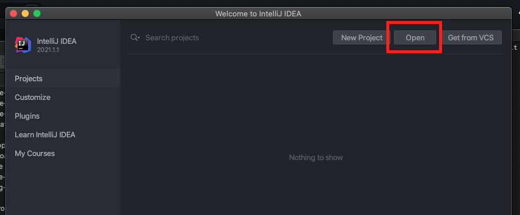
Select the folder you have just cloned from the GitHub repository:
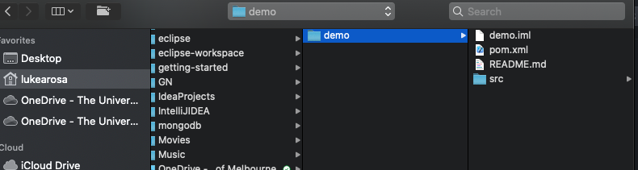
You may be prompted if you want IntelliJ to trust this Maven project, select Trust Project:
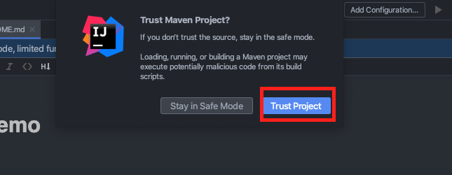
Now select Add Configuration:
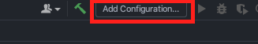
Add a new TomCat local configuration:
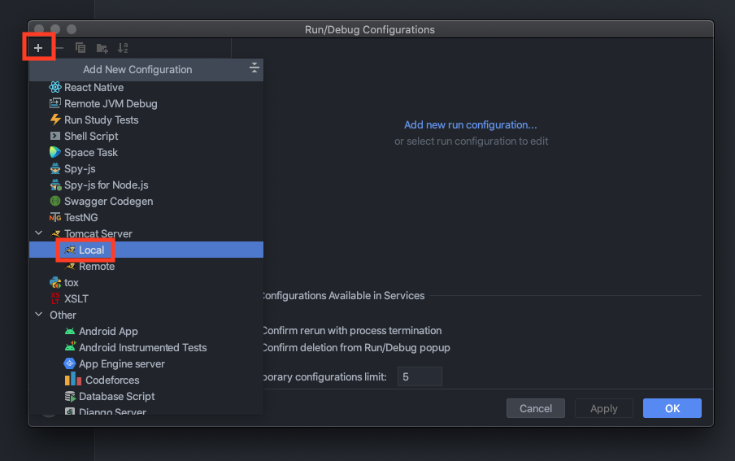
Select Configure (Application Server may or may not already be populated - ignore it):
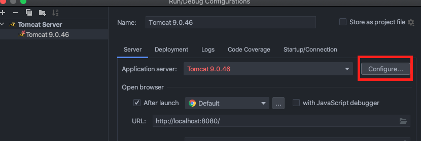
Select the Open icon:
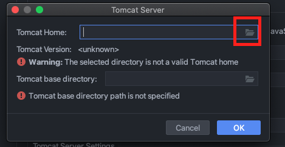
Select the folder where you unzipped the TomCat directory in Step 2: Download Tomcat:
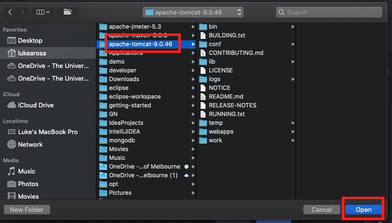
Select OK: 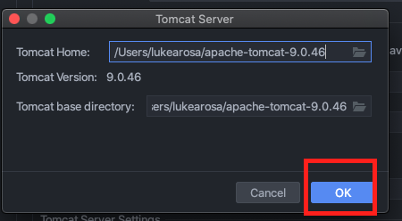
Select Deployment:
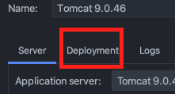
Select the Add icon:
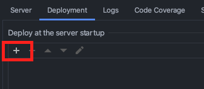
Select Artifact:
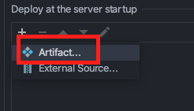
Select demo:war exploded:
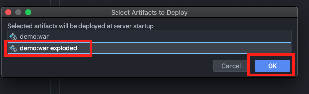
Note
A Web application can be deployed to the TomCat server as an exploded directory where files and folders are presented in the file system as separate items. A WAR file is a Web Archive file. An exploded WAR file means the structure is the exact same as an archive file but not zipped into an archive form.*
Select Apply then OK:
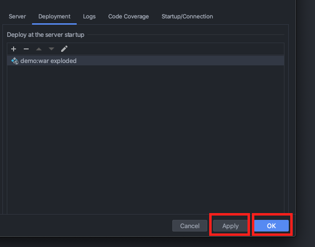
To test the artifact is being deployed to the server correctly, select Add Configuration then select the newly created TomCat configuration:
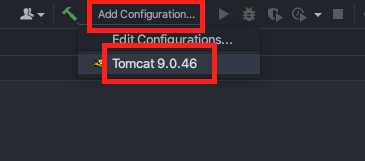
Select Run:
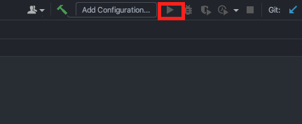
The program is now deployed to localhost:
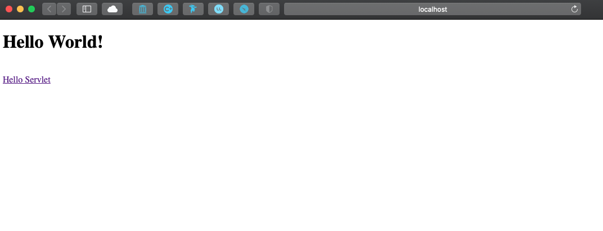
What’s Next
Please proceed to Step 7: Connect IntelliJ Project to PostgreSQL.